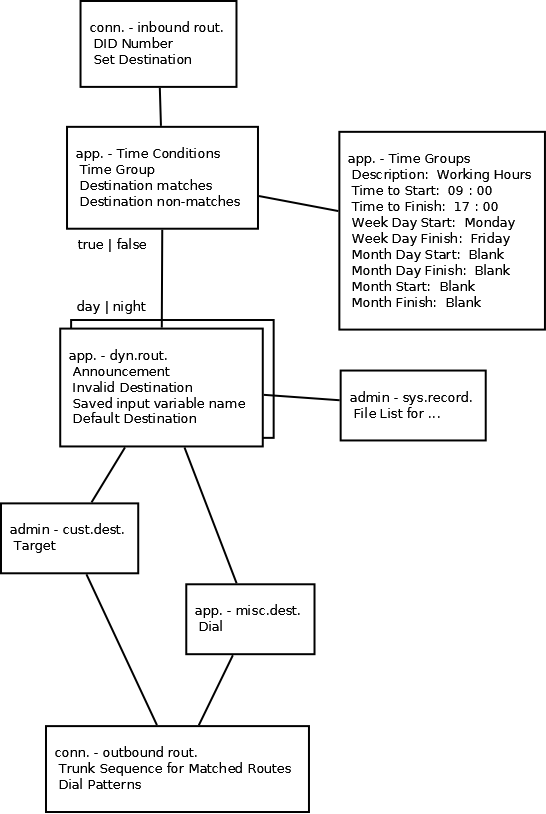

FreePBX
Схема IVR. День/ночь.

Настройки
settings - adv.set. - proxy
settings - adv.set. - PHP Timezone = Europe/Moscow
admin - sound languages
set. - MOH
admin - sys.record.
File List for ...
app. - announc.
connectivity - trunks
conn. - inbound rout.
DID Number
Set Destination
DID-Dest.=
1110 - Time Conditions: IVR
1111 - DISA: disa1
conn. - outbound rout.
Trunk Sequence for Matched Routes
Dial Patterns
app. - dyn.rout.
Announcement
Validation = ^[0-9]\{4\}$
Invalid Destination
Saved input variable name
Default Destination
Saved input variable name = DYNR1
Default Destination = dest1
Match-Destination = 1111 - disa1
admin - cust.dest.
Target
Custom Destinations = dest1
Target = from-internal,${DYNROUTE_DYNR1},1
app. - misc.dest.
Dial
app. - Time Groups
Description: Working Hours
Time to Start: 09 : 00
Time to Finish: 20 : 00
Week Day Start: Monday
Week Day Finish: Friday
Month Day Start: Blank
Month Day Finish: Blank
Month Start: Blank
Month Finish: Blank
app. - Time Conditions
Change Override
Time Zone
Time Group
Destination matches
Destination non-matches
feature code =
*271 - toggle time condition
app. - disa
pin
disa1
pin = 1234
app. - Queues
Join Empty = no
Leave Empty = yes
Skip Busy Agents = yes+ri.=no
extension
secret
user
user
password
[Главная]
[Наверх]